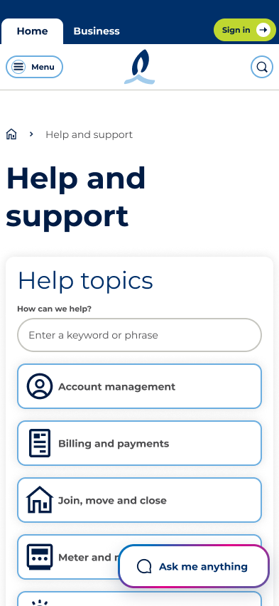
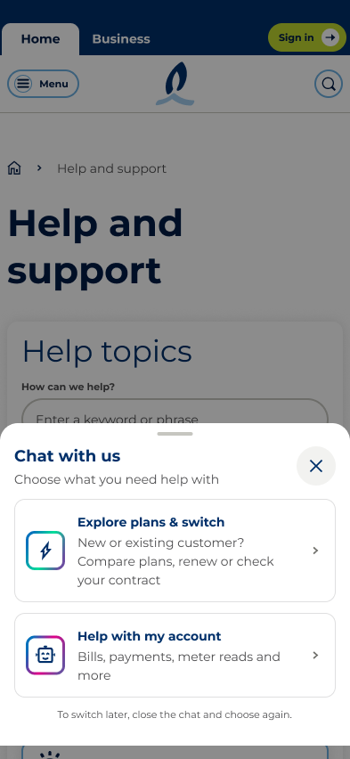
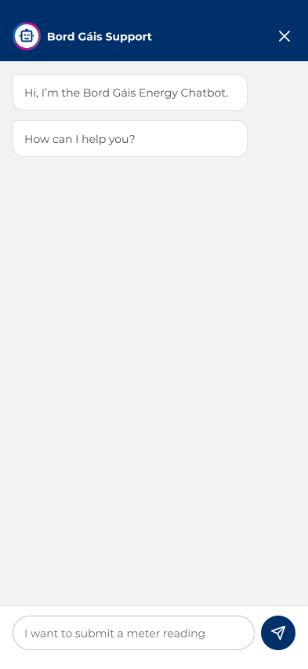
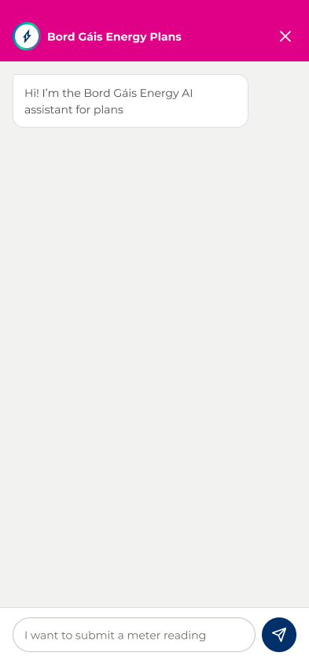

Case study 01 · in rollout
Designing AI agents that sell and serve, without a single button
Bord Gáis Energy is replacing its scripted Einstein chatbot with Salesforce Agentforce agents: one for sales, one for customer service. I lead the UX of both, from conversation design to the specs developers and testers build against.
My role
Senior Product / UX Designer, conversation design lead
Team
Product owners, BA, Agentforce and front-end developers, QA, UX research
Scope
Sales funnel, billing, moving home, account management, case creation and escalation, feedback
Tools
Miro, Figma, Jira, Gherkin, AI-assisted documentation
The problem
An LLM agent doesn’t follow a script, and Agentforce’s chat has no buttons or lists. Every choice the old bot offered as a button now has to happen in natural language, and the agent still has to authenticate customers, check contracts and eligibility, and open cases correctly.
The team also needed specs it could actually build and test from. Long flows in Miro were not being read, and writing exact bot copy in acceptance criteria made testers fail correct answers that were worded differently.
One structure for every journey
I set shared conventions so 30+ journeys behave the same way: the same login and account-selection step, the same ending, the same retry rules and the same customer-facing terms (“case number”, “3 working days”). That consistency is what lets one agent handle many topics without contradicting itself.
Key design decisions
Routing by language instead of buttons
After confirming Agentforce can’t render buttons, I designed disambiguation as short clarifying questions, with example utterances and routing rules for each intent.
Acceptance criteria describe meaning, not wording
Each bot message is written as required content (“must include the contract end date”). Testers check what the agent says, the agent keeps room to phrase it naturally, and the criteria double as guidance for training.
Consent before collecting leads
New customers are asked for consent before any offer, and we only keep name and email. For existing customers we record their interest instead of creating a lead, and use the marketing preferences they already set.
Never let the agent improvise contact details
Every journey that used to give a phone number now links to the contact form, so the agent is never trained to produce a number. Inputs like meter numbers get three attempts, then a clear way out.
No live agents, so cases have to be right
Escalation means opening a case. I defined one case per journey and account per conversation: anything new on the same topic is added as a comment, which avoids duplicate cases for the service team.
UX that survives a skill-based build
When development moved to skills and evaluation datasets, I turned each Miro journey into a self-contained, per-skill UX spec, so UX detail stayed in the one story every team uses.
What a spec looks like
Every journey ships as Gherkin acceptance criteria that dev, BA and QA share. This (simplified) example is from the case update journey.
I also use AI tools to turn Miro journeys into handoff documents, such as a 38-page journey pack for billing and moving home.
Scenario: Customer asks for an update on a case Given the customer is verified And has selected an account with open cases When they ask for an update Then the agent must give the case number And must explain the current status And must raise the case priority # 6+ open cases: suggest another channel Then redirect to Final interaction
Research: two agents, one website
During the transition, the existing service bot and the new Agentforce sales agent run side by side. With UX research we compared two ways to reach the right one: a menu in the chat launcher, or a different agent depending on the page. The menu was chosen after testing. This is the chosen flow:




Each agent has its own colour and icon, so customers can tell which one they are talking to. The sheet also tells them how to switch: close the chat and choose again.
Where it is now
The sales agent launches first, followed by service journeys. I’ve also proposed a process change: developers review the UX early and flag failure points before acceptance criteria are written, so we build for the agent’s real constraints instead of finding them in testing.